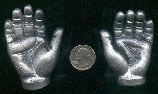

Can you identify maker?
3/21/2011
{kind=link}

Do you recognize these hands? Never mind the color - they were originally flesh colored. I'm just trying to learn their origin. I'm guessing they came from a commercial doll, not a vent figure. But does anyone know for certain? Contact Mr. D
.
{kind=link}
We do know the hands here were used on an MST3K Tom Servo robot. But the robots on that series were constructed using "junk" parts, so the question here is the "junk" source of the hands on the original Tom Servo. One responder suggested the hands were reproductions of hands from a Jerry Mahoney doll. And while they may have been found on some ventriloquist doll, I've had dozens of Jerrys pass through my shop over the last 40 years, and none had hands like these. Floyd Rathburn believes they may have come from a robot doll produced as part of the Star Trek series products.
Here's the link to a perfect repro casting of these same hands but that still doesn't answer the question of "Whence came the originals?" http://mst3kstuff.com/Products/popup_image.php?pID=217